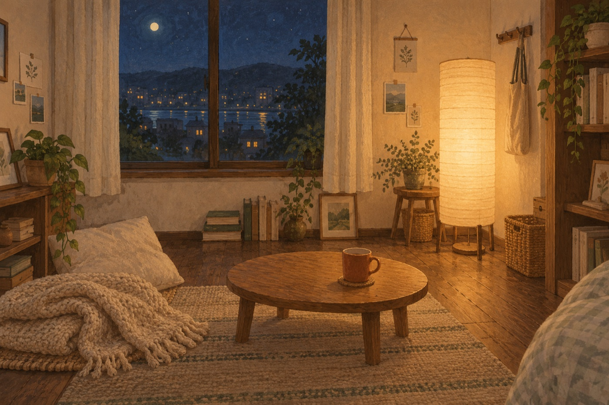
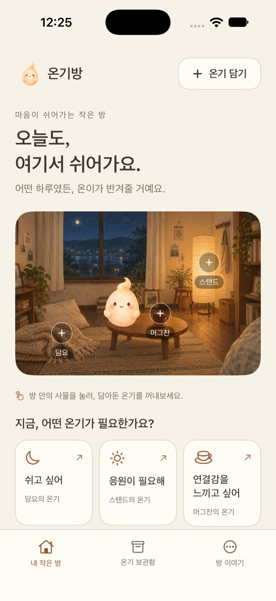
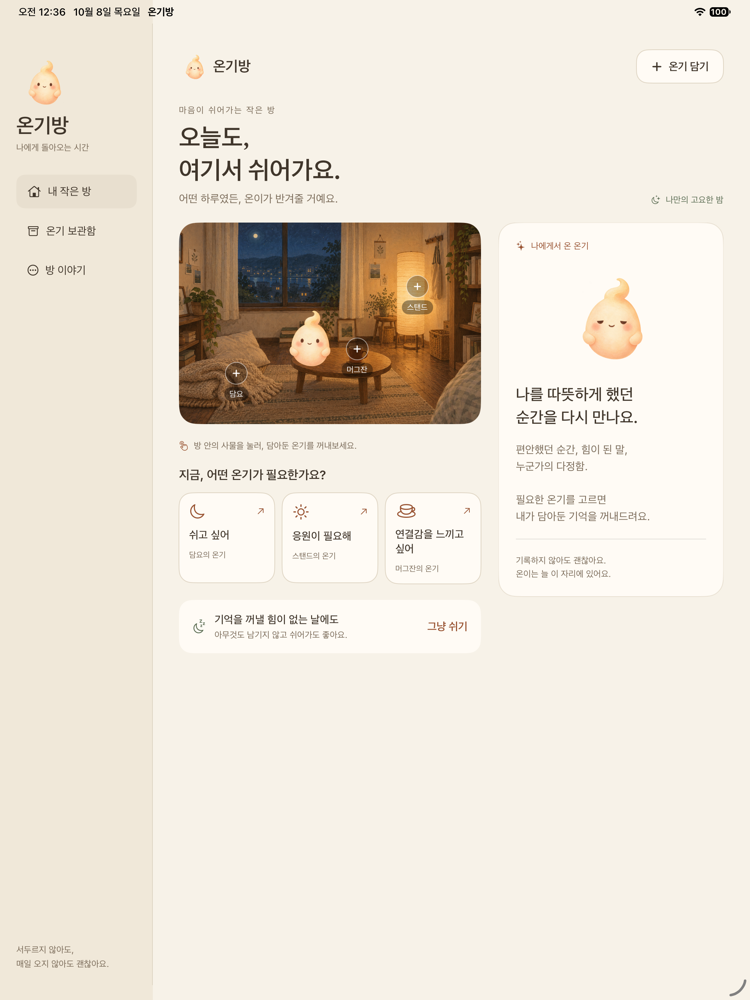
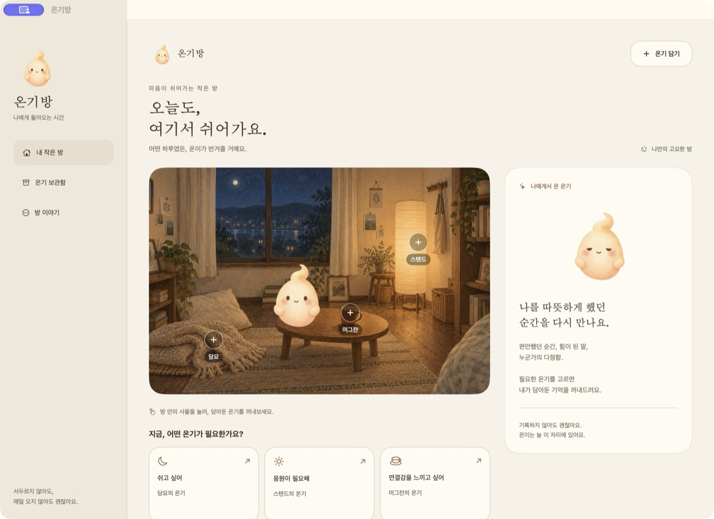

An example of how the app works
A memory by your blanket
A sunlit weekend afternoon.
Nothing I needed to do.
A moment of feeling at ease.
You can give yourself that rest today, too.
Ongibang · A little room for you
Stay with Oni, a quiet little spirit.
Find comfort in memories you've chosen to keep.
No daily streak. No pressure to write. Just room for you.
iPhone · iPad · Mac

What you need, right now
Tap the blanket, lamp or mug.
Oni will quietly move beside it.
An example of how the app works
A memory by your blanket
A sunlit weekend afternoon.
Nothing I needed to do.
A moment of feeling at ease.
You can give yourself that rest today, too.
This website uses examples. It never asks for or stores your personal memories.
Coming in Ongibang 1.3
Version 1.3 is being prepared and has not been released.
The current App Store version is 1.1, available in Korean.
Add a title and date, with an optional time, repeat and reminder. Mark a task complete or undo it. Unfinished plans stay on their original dates.
Look back at what you did. Leave a mood or a sentence if you like. You can skip writing and go straight to a quiet minute with Oni.
Choose optional private iCloud sync for memories, photos, plans and reflections. Offline edits save locally first. Korean and English will be supported.
Made for your devices
Actual app captures. Version and language are identified below each screen.

Follow a simple sequence from room to memory.
Version 1.1 · Korean interface
Enjoy your room and memories together.
Version 1.1 · Korean interface
More room to read, with keyboard and pointer support.
Version 1.1 · Korean interfaceThese are captures of the currently released Korean app. English 1.3 previews will be added after final validation.
Memories you choose
Either text or one photo is enough. Memories default to Archive only. Only the memories you assign to rest, encouragement or connection appear in that comfort flow.
Chosen photos are copied into the app. Deleting the original won't remove your saved memory.
Version 1.3 backups include memories, photos, plans and reflections, and accept version 1.1 backups. Version 1.0 backups are not automatically converted. Exported JSON files are not encrypted.
A minute, just for you
A quiet room, Oni by your side, and sixty seconds without sound.
How rest works →English support is coming in version 1.3.
No. You can visit your room and rest without leaving a record. There are no streaks or penalties.
No. Only memories you explicitly assign to a kind of warmth appear there. Archive only keeps them in your library.
Version 1.3 adds optional private iCloud sync. Version 1.1 stores each device's records independently; use a backup to move them.
No. This demo uses examples, and the rest session lasts only during your visit. There are no forms for personal writing or photos.
Read the support guide or email todaklife@gmail.com.